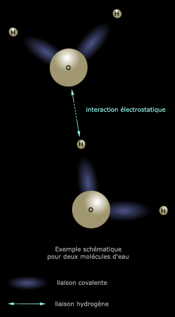

|
|
Navig.
page/section


_____
|
|
Pages soeurs
Les dialogues de Dotapea
Les échelles
Gaz, liquides, solides (phases)
Rhéologie, viscosité et thixotropie
Diluants, solvants, dissolvants
La saponification
Saturation
Les liaisons entre atomes
La conduction électrique
Oxydants/réducteurs/acides/bases
Oxydoréduction
Les acides
Les alcalis
Les sels, leur formation
L'émulsion
L'ester
L'ion et l'isotope
Electronégativité, polarité
L'onde
La tensioactivité
Cisaillement et compression
Différenciation magmatique
Pâtes, charges et agrégats
Le colloïde
Toxicité, nocivité, pollution
Distillation, raffinage
La photoluminescence
_____
|
Copyright © www.dotapea.com
Tous droits réservés.
Précisions cliquer ici
|
|
| |
|
Les liaisons
entre atomes
Ce sujet aussi difficile qu'essentiel -
il s'agit d'évoquer la cohésion de notre univers,
c'est une sorte de « clé » - est traité non sans quelques retours nécessaires
sur d'autres concepts. Nous conseillons une lecture complète (avec exploration
des différents liens) et progressive.
On ajoutera que la question
des liaisons (toutes les liaisons, y compris mécaniques) est déterminante pour
les phases de la matière (gaz, liquide, solide). Ainsi, on mesurera la portée du
sujet abordé ici en lisant en premier lieu ce
court passage de l'article Les
phases de la matière.
Chaque atome est pourvu d'une capacité de garder près de lui ses propres
électrons. Cela se nomme l'électronégativité.
Quelques exemples : certains atomes métalliques sont relativement faibles (vers
le bord gauche de la table de Mendeleïev) et leurs électrons ont peu de
difficultés à s'en éloigner ; l'oxygène est par
rapport à eux
un séducteur, enfin le fluor est de toute la table de
Mendeleiev le plus attractif.
Mais cette propriété intrinsèque des éléments ne prend son sens que lorsque
les atomes sont mis en présence. La différence entre les électronégativités est
en effet essentielle car elle détermine quel type de liaisons va pouvoir
s'instaurer. Cette différence est nommée le delta (Δχ). Lorsque
Δχ est supérieur à 2, il va s'agir de
liaisons ioniques. En deçà, par exemple dans le cas d'un couple d'éléments
identiques comme notre familier O2, on pourrait croire que les atomes
sont mutuellement « indifférents », mais un autre type de relations s'installe,
ce sont les liaisons covalentes.
* liaisons
ioniques.
Dans le sel de table, Na et Cl subissent une attraction forte, de nature
électrostatique. D'une
manière générale, dans les sels, la
différence entre les électronégativités est importante (comme on l'a dit, Δχ>2)
parce qu'un sel est généralement constitué d'un non-métal souvent fortement
électronégatif - l'anion - associé à un métal qui l'est moins - le cation.
C'est le cas courant.
Il s'agit d'une liaison polaire. Le pôle + est du côté du métal (ou du moins
électronégatif), le - du côté du non-métal (ou du plus électronégatif).
Particularismes
La taille d'un atome peut aussi influer sur son électronégativité. Si l'on
peut saisir une tendance globale qui est que de gauche à droite sur chaque
ligne de la table de Mendeleïev, les
électronégativités croissent, il existe des exceptions comme le tout petit
hydrogène ou une partie des métaux commençant à la colonne
zinc/cadmium/mercure. Ainsi, l'or est le plus électronégatif de la sixième
ligne malgré sa position presque centrale.
On peut aussi noter qu'entre deux non-métaux, les électronégativités peuvent
donner un delta supérieur à 2, ce qui n'est pas le cas entre deux métaux.
Lire passage in
Electronégativité, liaisons et liaisons polaires.
* liaisons covalentes
Lire
l'article qui leur est consacré.
* liaisons
métalliques
Un électron peut circuler parmi
des millions d'atomes, autorisant notamment la circulation d'un courant. Ne
pas se méprendre sur l'intitulé : en fait de métaux, il peut aussi bien
s'agir de molécules cycliques
(voir définition du métal et surtout
passage in Les chaînes).
* les liaisons hydrogène
|
L'Académie française les définit d'une manière sobre :
« (...) liaison électrostatique entre deux atomes électronégatifs assurée
par l'atome d'hydrogène. »
Entendre par "atomes électronégatifs" des atomes ayant une forte
électronégativité.
On trouve d'autres définitions, pas toujours très cohérentes. Aussi se
contentera-t-on ici des points les plus prégnants, sans lésiner sur le
conditionnel.
D'abord il s'agirait « [d'une] liaison dont peu de monde soupçonnait
l'importance, il y a quelques années encore » (Yves Maréchal, CEA
Grenoble, in
page externe sur le site du CNRS). C'est tardivement et contre toute attente la biologie qui aurait apporté
un regard nouveau sur la portée de ce phénomène. Ce point de vue ne semble
pas unanime cependant (voir ci-contre).
Caractéristiques générales
L'exemple le plus couramment utilisé est l'eau où les molécules H2O
sont liées entre elles par les hydrogènes.
Ci-dessous, une figure tente de représenter très schématiquement un exemple
portant sur deux molécules. |
|
|
Vue d'ensemble
et précisions
par Jean-Louis
Lors de la formation d'une liaison covalente,
les atomes qui se lient mettent des électrons en commun sur une
orbitale, un "nuage électronique". Sauf dans les liaisons
homo-atomiques, comme la liaison C-C, l'un des atomes aura toujours
tendance à attirer un peu plus que son quota de ce nuage, il sera donc
chargé un peu plus négativement que l'autre. Par exemple dans H2O,
les hydrogènes sont déficitaires en électrons, l'oxygène excédentaire.
Ces petits déséquilibres de charges sont alors la source
d'interactions électrostatiques qui peuvent être intra- ou
intermoléculaires, les liaisons H ou liaisons hydrogène. Comme le
déséquilibre électronique a lieu suivant l'axe de la liaison covalente
qui en est la cause, les interactions
électrostatiques qui en
résultent sont directives, elles ont lieu préférentiellement suivant
l'axe de la liaison.
Dans une liaison H il y a forcément un atome d'hydrogène et deux
atomes électronégatifs tels que O, N ou F. L'hydrogène est lié de
façon covalente à l'un des atomes O, N ou F, ce qui, du fait de
l'électronégativité, donne lieu à une répartition électronique
asymétrique, l'atome H portant un petit excès de charge positive. Cet
excès de charge interagit avec le deuxième atome électronégatif, c'est
la liaison H.
|
|

|
Comme dans la définition de
l'Académie, on est en effet en présence d'un atome, O, possédant une électronégativité
assez forte (3,4) lié à d'autres O par le biais de H. Il s'agit en
l'occurrence de liaisons
intermoléculaires, même si la "portée" de la liaison hydrogène est aussi intramoléculaire.
On n'est pas ici dans la covalence (même si celle-ci joue un rôle dans le
phénomène comme on peut le lire ci-contre), on n'est pas non plus dans une liaison ionique car
l'hydrogène, malgré sa
toute petite taille, possède une électronégativité proportionnellement très
importante : 2,1. Il est plus attractif que tous les éléments des sept
premières colonnes de la table de Mendeleïev (lien).
Ainsi, le Δχ entre O et H vaut
seulement 1,3, et d'ailleurs si H a bien accès aux liaisons covalentes
(citons H2), il lui est théoriquement impossible (information non
confirmée) d'établir une liaison
ionique avec un autre élément quel qu'il soit puisque la plus forte
électronégativité connue (fluor) est de 4 et la plus faible de 0,7
(francium) alors que, comme dit ci-dessus, une telle liaison nécessite un
différentiel de 2 points sur l'échelle de Pauling. |
|
|
Les liaisons H sont relativement fortes, plus fortes que les
interactions de van der Waals (voir
ci-dessous), moins fortes que les liaisons
covalentes et ioniques. Elles varient d'un composé à l'autre. Ces
liaisons jouent un rôle important dans de nombreux phénomènes,
notamment les propriétés de l'eau (points de fusion et d'ébullition,
structure) et d'autres composés. Elles stabilisent les liaisons entre
bases dans notre ADN, où leur caractère réversible est mis à profit
lors de la transcription.
Elles sont aussi utiles dans les
élastomères auto-réparants,
ceux qui se recollent après qu'on les a coupés si on remet les deux
bouts en contact.
Cette notion de liaison H est apparue vers 1912 (T.S. Moore et
T.F. Winmill).
Concernant l'importance des liaisons H, je dirais qu'on en est
conscient depuis le début, et en tout cas certainement après les
travaux de Crick et Watson sur l'ADN.
|
Terminons par une autre citation de la page web de Yves Maréchal : « Dans
l'eau liquide ou la glace, où il n'y a que des molécules d'eau, cela permet
d'avoir un nombre de liaisons hydrogène particulièrement élevé : autant que
de liaisons de valence. » En effet, H se situant dans la première
colonne de la table de Mendeleïev, il devrait pouvoir (information non
confirmée) engager 17 liaisons avec d'autres atomes (voir à ce sujet
passage in table de Mendeleïev et
valence in Glossaire).
Ainsi, si l'hydrogène - à savoir un malheureux proton accompagné d'un
électron, le plus banal élément présent dans l'univers - semble de peu de
poids par rapport aux autres atomes, il est particulièrement privilégié par
la nature qui lui a conféré une électronégativité totalement atypique et une
capacité de relier entre eux un nombre conséquent d'atomes grâce à une
liaison entièrement dédiée, privilège qui fait de lui sans doute une brique
de la vie, comme le rappelle Jean-Louis au sujet de l'ADN.
plus un dernier type de liaisons, substantiellement différent :
*
les "forces de liaison faibles" - (à
ne pas confondre avec l'interaction faible) -, dites aussi "de Van der Waals".
Elles sont essentiellement de type dipolaire.
Elles sont de trois sortes (orientation, dite de Keesom, induction, dite de
Debye, dispersion, dite de London) et toutes de courte ou très courte portée
- de 1/r6 à 1/r8 -, mais fondamentales dans
beaucoup de petits phénomènes subtils d'adhésion, de
mouillage ou
d'assemblage.
Voir aussi :
le rayon atomique de Van der Waals
Lien.
Pour terminer, on peut évoquer les liaisons de types multiples au sein d'un
même assemblage moléculaire :
lire
passage in Courrier des Lecteurs.
Avec l'aide
de Jean-Louis
Retour
début de page
|
|

 Communication
Communication


|
|